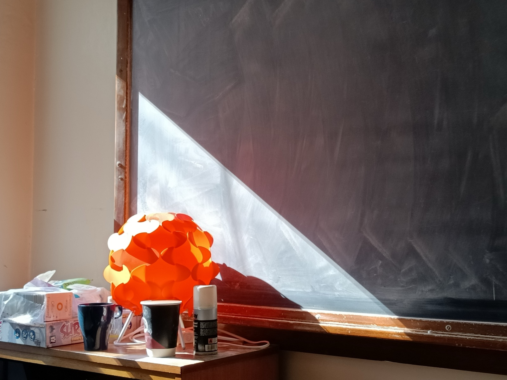

Postdoc, High Energy Theory Group · Scuola Normale Superiore, Pisa
I am a theoretical physicist in the high energy theory group at Scuola Normale Superiore in Pisa working on twistor methods for cosmological correlators. Previously, I completed my PhD and spent one year as a postdoc in the theoretical physics group at Imperial College London.
INSPIRE-HEP · GitHub · LinkedIn · CV · Email
Postdoctoral Fellow, High-Energy Physics Group
Scuola Normale Superiore, Pisa
Research Associate, Theoretical Physics Group
Imperial College London
PhD, Theoretical Physics
Imperial College London
Thesis: 'Consistency of gravitational effective field theories',
Supervisor: Prof. Claudia de Rham
MSc, Quantum Fields and Fundamental Forces
Imperial College London
Distinction · Abdus Salam Prize (highest rank in year)
BSc, Physics with Theoretical Physics
Imperial College London
First class · President’s Undergraduate Scholarship
